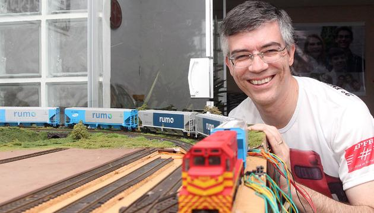

O Ferreomodelismo é um hobbie que envolve modelos de trens em menor escala, sendo ela 1:87 ou até outras menos conhecidas, neste hobbie você pode explorar diversas coisas envolvendo a escala e o seu conteúdo, como a criação de maquetes e modelos.
O Hobbie envolve:
Entre outros...
